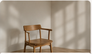
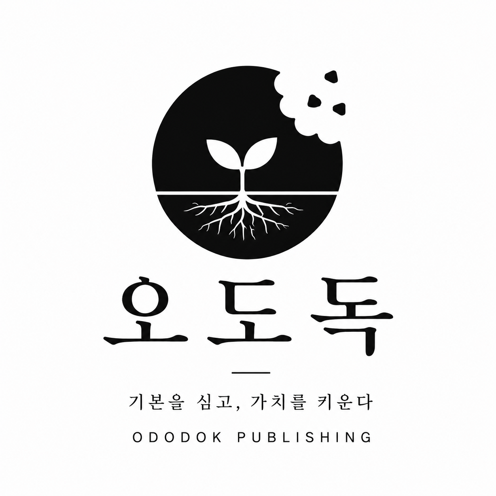

기본을 우선한다
모든 일의 시작은
기본에서 출발합니다.
WHY
광고는 사람을 데려옵니다.
기본은 사람을 남게 합니다.
사람을 데려옵니다.
현재 상태를 확인합니다.
개선 순서를 만듭니다.
OUR PHILOSOPHY
모든 일의 시작은
기본에서 출발합니다.
복잡한 것을
기본으로 풀어냅니다.
생각에서 멈추지 않고
실천으로 이어집니다.
단기 성과보다
지속 가능한 성장을 믿습니다.
눈에 띄는 기술보다 오래 남는 것은
매일 반복하는 기본입니다.
기억에 남는 브랜드는
기본적인 원칙을 따릅니다.

반복되는 작은 행동이
결국 큰 차이를 만듭니다.
ABOUT ODODOK
오도독은 사람과 브랜드가 오래갈 수 있도록 단단한 기준을 만듭니다. 화려한 기교보다 본질을, 빠른 결과보다 지속 가능한 성장을 믿습니다.
